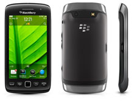

| GENERAL | 2G Network | GSM 850 / 900 / 1800 / 1900 |
| 3G Network | HSDPA 900 / 1700 / 2100 | |
| HSDPA 850 / 1900 / 2100 / 800 | ||
| Announced | 2011, August | |
| Status | Available, Released 2011, September | |
| BODY | Dimensions | 120 x 62 x 11.5 mm |
| Weight | 135 g | |
| - Optical trackpad | ||
| DISPLAY | Type | TFT capacitive touchscreen, 16M colors |
| Size | 480 x 800 pixels, 3.7 inches (~252 ppi pixel density) | |
| Multitouch | Yes | |
| SOUND | Alert types | Vibration, MP3 ringtones |
| Loudspeaker | Yes | |
| 3.5mm jack | Yes | |
| MEMORY | Card slot | microSD, up to 32 GB |
| Internal | 4 GB storage, 768 MB RAM | |
| DATA | GPRS | Yes |
| EDGE | Yes | |
| Speed | HSDPA 14.4 Mbps, HSUPA 5.76 Mbps | |
| WLAN | Wi-Fi 802.11 b/g/n | |
| Bluetooth | Yes, v2.1 with A2DP | |
| USB | Yes, microUSB v2.0 | |
| CAMERA | Primary | 5 MP, 2592 x 1944 pixels, autofocus, LED flash |
| Features | Geo-tagging, continuous auto-focus, image stabilization, face detection | |
| Video | Yes, 720p | |
| Secondary | No | |
| FEATURES | OS | BlackBerry OS 7.0 |
| CPU | 1.2 GHz QC 8655 | |
| Sensors | Accelerometer, proximity, compass | |
| Messaging | SMS, MMS, Email, Push Email, IM | |
| Browser | HTML | |
| GPS | Yes, with A-GPS support | |
| Java | Yes, MIDP 2.1 | |
| Colors | Black | |
| - Social feeds | ||
| - BlackBerry maps | ||
| - Document viewer | ||
| - MP3/WMA/WAV/eAAC+/FIAC player | ||
| - DivX/XviD/MP4/WMV/H.263/H.264 player | ||
| - Organizer | ||
| - Voice memo/dial | ||
| BATTERY | Standard battery, Li-Ion 1230 mAh | |
| Stand-by | Up to 330 h (2G)/Up to 320 h (3G) | |
| Talk time | Up to 4 h 40 min (2G)/Up to 6 h 50 min (3G) | |
| Music play | Up to 44 h | |
| TEST | Display | Contrast ratio: 1413:1 (nominal) |
| Loudspeaker | Voice 67dB / Noise 65dB / Ring 75dB | |
| Audio quality | Noise-86.8dB / Crosstalk -86.5dB | |
| Camera | Photo / Video |
BlackBerry Torch 9860
